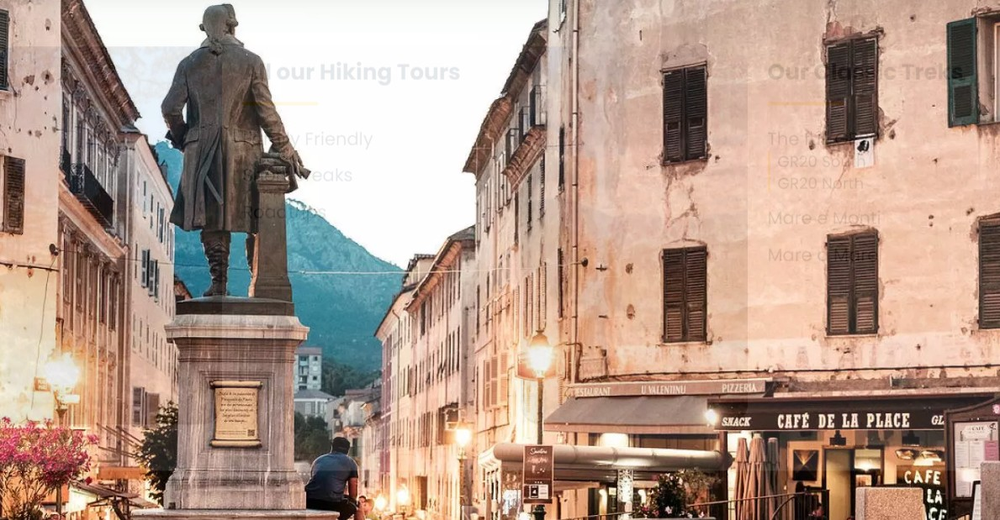

Pasquale Paoli nem egy egyszerű hadvezér volt, hanem igazi vizionárius államférfi. Amikor 1755-ben kikiáltotta a Korzikai Köztársaságot és Corte-t tette meg az új állam fővárosává, olyat tett, amin Európa abszolutista uralkodói csak ámultak: megalkotta a kontinens első modern, írott alkotmányát. Ez a dokumentum a népszuverenitáson és a hatalmi ágak megosztásán alapult, sőt, a világon elsőként bizonyos helyi választásokon a nőknek is szavazati jogot biztosított. Paoli azonnal egyetemet is alapított itt Corte-ban, mert szentül hitte, hogy egy szabad nemzetnek nemcsak fegyverekre, hanem kiművelt emberi főkre is szüksége van.
A város szívében, a nyüzsgő Place Paoli közepén álló emlékművet Vital Dubray neves francia szobrász alkotta meg, és 1864-ben avatták fel. Ha alaposan megfigyeled a részleteket, láthatod, hogy Paoli nem kardot rántva, harcias pózban látható, hanem méltóságteljes díszruhában áll, jobb kezében egy szorosan feltekert papírtekerccsel. Ez a tekercs magát a korzikai alkotmányt jelképezi. A szobor így nemcsak egy történelmi személynek állít emléket, hanem a korzikaiak mindmáig megingathatatlan szabadságvágyának és nemzeti önérzetének a legfőbb szimbóluma.
Kevesen tudják, de Paoli eszméi és a korzikai szabadságharc óriási ihletet adtak az amerikai alapító atyáknak is. Az amerikai függetlenségi háború előtt tevékenykedő radikális csoport, a „Sons of Liberty” (A Szabadság Fiai) egyenesen példaképként tekintett a korzikai berendezkedésre, és az Amerikai Egyesült Államokban ma is több település (például a pennsylvaniai Paoli város) őrzi a korzikai hős nevét. Paoli kultusza a szigeten ma is tapintható: a corte-i egyetem büszkén viseli a nevét (Université de Corse Pasquale Paoli), születésnapja nemzeti emléknap, és nincs olyan korzikai város, ahol ne botlanál bele az örökségébe.
A szobor körüli tér ma Corte legélőbb, legdinamikusabb pontja. Nem egy steril, elkerített történelmi emlékhelyről van szó: az egyetem közelsége miatt a korzikai diákok itt gyűlnek össze vitatkozni és élni a mindennapjaikat, miközben a háttérben a meredek sziklaszirten trónoló corte-i fellegvár (Citadella) látványa magasodik. A tér kávézóinak egyikébe beülve, egy helyi gesztenyés sör vagy egy erős fekete mellett lehet a legjobban átérezni Korzika egyszerre történelmi, büszke, de mégis fiatalos és vibráló energiáját.